Tutorial 6: Joint Gains Tuning#
최대 토크와 최대 속도가 설정되었습니다(Tutorial 5). 나머지 질문: 새 위치를 명령할 때 각 관절은 어떻게 반응하나요? 너무 강성이 높으면 핸드가 떨리거나 오버슈트할 수 있고, 너무 낮으면 지연되거나 목표에 도달하지 못합니다. 강성과 감쇠는 PD(비례-미분) 제어기를 형성합니다: 강성이 관절을 목표 방향으로 당기고, 감쇠는 속도에 저항하여 진동을 줄입니다. 이 튜토리얼에서는 Isaac Sim의 Gain Tuner를 사용하여 엄지 손가락의 이러한 게인을 튜닝하고, 스텝 및 사인파 테스트를 실행하며, 내장된 차트로 위치와 속도를 분석합니다—과소 감쇠, 임계 감쇠, 과도 감쇠 동작을 확인하고 반응적이고 안정적인 동작을 목표로 합니다.
Learning Objectives#
이 튜토리얼에서 수행할 작업:
튜닝하기: Gain Tuner를 사용하여 엄지 손가락의 드라이브 강성 및 감쇠 튜닝하기.
실행하기: 스텝 및 사인파 테스트를 실행하고 차트에서 과소 감쇠, 임계 감쇠, 과도 감쇠 동작 해석하기.
분석하기: Gain Tuner 차트로 튜닝 결과를 분석하고 물리 레이어에 게인 저장하기.
Prerequisites#
Tutorial 5: Joint Drive Tuning을 완료합니다.
Isaac Sim에서
/path/to/Inspire/module_4_end-checkpoint_2/inspire_hand.usda를 열거나 아직 열지 않은 경우 엽니다.
Module 5.1: Understanding Joint Drive Stiffness and Damping#
Isaac Sim의 위치 제어는 강성과 감쇠를 사용합니다:
힘 = (강성 × delta_position) + (감쇠 × delta_velocity)
강성 — 스프링처럼; 목표까지의 거리에 비례하는 힘. 강성이 높을수록 관절이 목표 방향으로 더 강하게 당겨집니다.
감쇠 — 충격 흡수기처럼; 속도에 비례하는 힘. 감쇠가 높을수록 진동과 오버슈트가 줄어듭니다.
함께 PD(비례-미분) 제어기를 형성합니다.
Why Tuning Stiffness and Damping Matters#
강성과 감쇠는 관절이 위치 명령에 어떻게 반응하고 접촉 시 어떻게 동작하는지를 직접 결정합니다. 잘못된 튜닝은 다음을 초래합니다:
비현실적인 동작 — 너무 강성이 높으면 로봇처럼 보이거나 떨림이 발생할 수 있고, 너무 부드러우면 핸드가 느리거나 약하게 느껴집니다.
불안정성 — 낮은 감쇠와 높은 강성은 진동과 오버슈트를 유발합니다; 접촉 시 이는 채터나 불안정한 파지를 유발할 수 있습니다.
낮은 추종성 — 게인이 너무 낮으면 관절이 시간 내에 목표에 도달하지 못하거나 부하 아래서 드리프트합니다.
강성 대 감쇠의 비율이 반응의 감쇠 영역을 정의합니다. 목표 위치로의 스텝에 대해 세 가지 동작 중 하나가 나타납니다:
영역 |
어떻게 보이는지 |
원인 |
|---|---|---|
과소 감쇠 |
관절이 목표를 오버슈트한 후 진정되기 전에 진동(링)합니다. 여러 번의 오버슈트가 나타날 수 있습니다. |
감쇠에 비해 강성이 높습니다; "스프링"이 지배하고 에너지를 소산시키기 위한 충분한 "충격 흡수기"가 없습니다. |
임계 감쇠 |
관절이 목표에 부드럽게 접근하여 오버슈트 없이 가장 짧은 시간에 도달합니다. |
강성과 감쇠가 시스템이 링을 일으키지도 느리게 움직이지도 않도록 균형을 이룹니다. 종종 반응적이고 안정적인 동작의 목표입니다. |
과도 감쇠 |
관절이 목표에 천천히 접근하며 절대 오버슈트하지 않습니다. 반응이 느립니다; 안정화에 오랜 시간이 걸릴 수 있습니다. |
강성에 비해 감쇠가 높습니다; 동작이 심하게 저항됩니다. |
Gain Tuner에서 위치 차트에서 진동이나 오버슈트가 보이면 과소 감쇠 상태입니다—감쇠를 높이거나 강성을 줄이세요. 관절이 거의 움직이지 않거나 천천히 목표를 향해 기어간다면 과도 감쇠 상태입니다—강성을 높이거나 감쇠를 줄이세요. 거의 오버슈트 없이 빠르게 목표에 도달하는 반응을 목표로 하세요(임계 감쇠에 가깝게).
Module 5.2: Using Gain Tuner to Tune Joint Drive Stiffness and Damping#
아직 열지 않은 경우 Isaac Sim에서
/path/to/Inspire/module_4_end-checkpoint_2/inspire_hand.usda를 엽니다.Tools > Robotics > Asset Editors > Gain Tuner로 이동합니다.
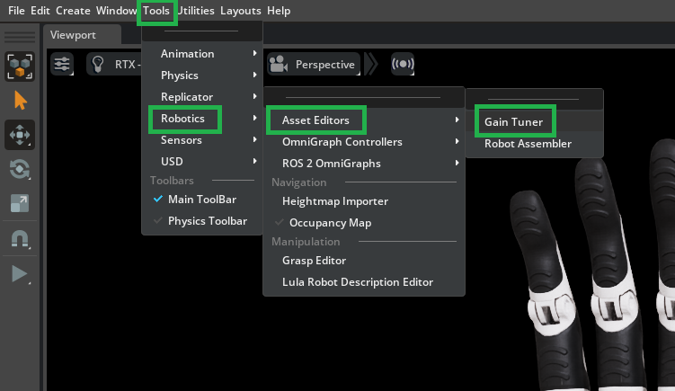
Tune Gains에서 Mode를 Position으로, Type을 Force로 설정합니다.
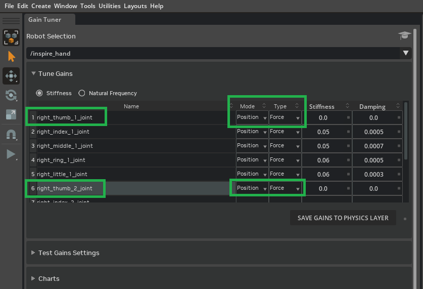
Note
module_4_end-checkpoint_2 파일에서 손가락 관절에는 이미 강성과 감쇠가 설정되어 있습니다. 이 튜토리얼에서는 엄지 관절(right_thumb_1_joint, right_thumb_2_joint)의 튜닝 및 검증에 집중합니다.
Tuning Guidelines (PhysX)#
감쇠를 0으로 설정하고 기본 위치 반응을 확인하기 위해 강성만 튜닝합니다.
관절이 목표에 가깝게 수렴할 때까지 강성을 높입니다.
기준선으로 감쇠를 강성보다 한 자릿수 낮게 설정합니다(오버슈트하지 않아야 함); 빠른 반응을 위해 감쇠를 줄입니다.
안정성, 반응 시간, 오버슈트를 위해 이 기준선 주변에서 두 값을 미세 조정합니다.
Run a Test#
Stiffness 열에서
right_thumb_1_joint과right_thumb_2_joint의 초기 값을 설정합니다(예: 0.01).
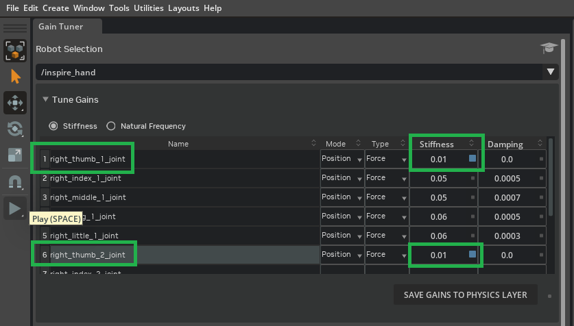
Test Gains Settings에서
right_thumb_1_joint과right_thumb_2_joint의 Test 체크박스를 활성화합니다.
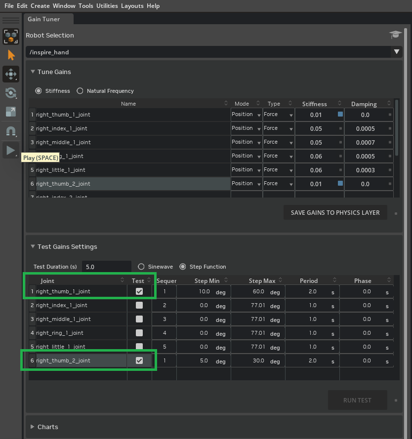
엄지가 유용한 범위로 움직이도록 Step Function 최솟값과 최댓값을 설정합니다:
right_thumb_1_joint의 Step Min을 10°로, Step Max를 60°로 설정하고,right_thumb_2_joint의 Step Min을 5°로, Step Max를 20°로 설정합니다. 관절이 최대 속도 한계 내에서 목표에 도달할 수 있도록 Duration을 2.0으로 늘립니다.
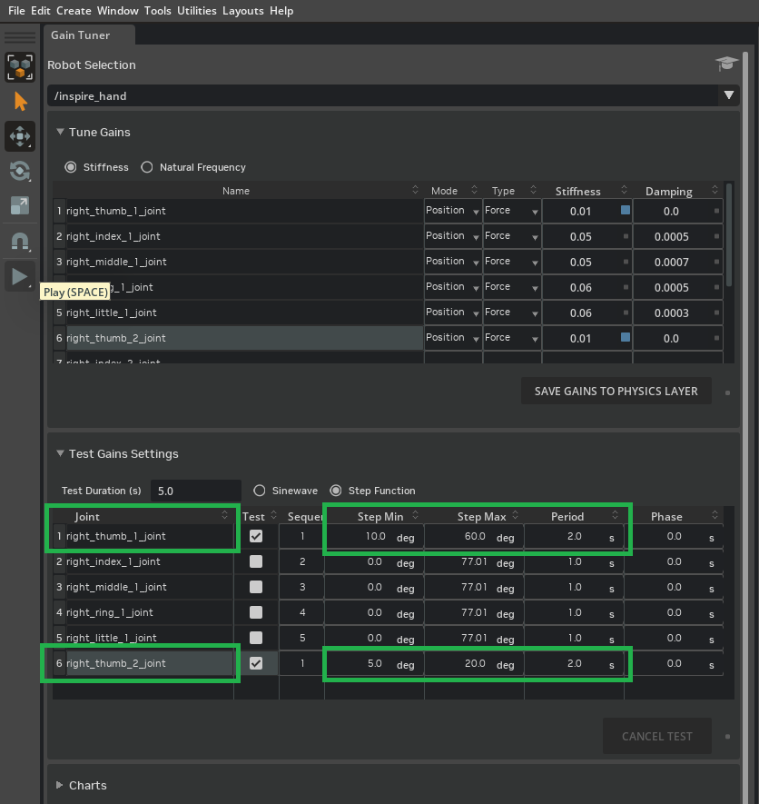
Tip
엄지 관절의 스텝 함수 범위(최솟값/최댓값)는 운동 범위의 상당 부분을 이동하도록 선택되었지만, 의도적으로 극단적이거나 문제가 되는 포즈(예: 측면 움직임 없이 과도하게 말리는 것은 비현실적인 접촉을 유발할 수 있음)는 피합니다.
어떤 관절이든 전체 범위를 정밀하게 검사하고 대화식으로 이동하려면 Physics Inspector 도구를 사용합니다:
Tools > Physics > Physics Inspector로 이동합니다.
Inspector 창에서 드롭다운에서 Articulation으로
r_base_link를 선택합니다.인터페이스를 사용하여 어떤 관절의 드라이브 목표 위치를 직접 설정하고 뷰포트에서 동작을 관찰합니다.
목표를 명령하기 전에 관절의 강성이 0이 아닌 값으로 설정되어 있는지 확인하세요—그렇지 않으면 관절이 목표 변경에 반응하지 않을 수 있습니다.
Play를 누른 후 Run Test를 클릭하여 게인을 적용하고 평가를 실행합니다.
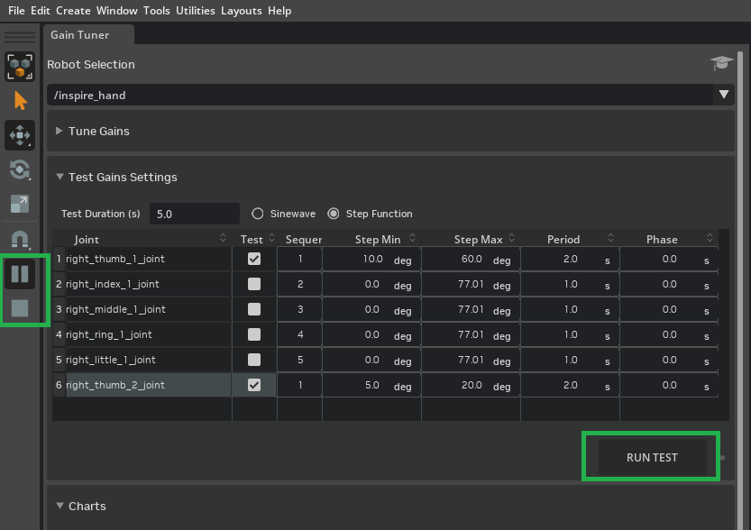
Tip
더 높은 강성 값에서 불안정성이 보이면 Property 패널을 열고 PhysicsScene을 선택한 후 Time Steps Per Second를 늘려보세요.
Module 5.3: Analyze Tuning Results#
Gain Tuner의 Charts는 실제 위치와 속도를 명령된 값과 비교할 수 있게 해줍니다. 오버슈트, 지연, 결합을 발견하는 데 사용합니다: 예를 들어 right_thumb_2_joint만 테스트할 때와 두 엄지 관절이 함께 움직일 때 다르게 동작할 수 있습니다. 게인을 조정하고 두 엄지 관절의 병렬 테스트를 실행한 후, 모든 손가락을 병렬로 실행하여 물리 레이어에 저장하기 전에 전체 핸드가 명령을 추종하는지 확인합니다.
Run a Test에서의 테스트가 완료되면 Charts 섹션을 확장하고
right_thumb_1_joint과right_thumb_2_joint를 다중 선택합니다(CTRL + 왼쪽 클릭).
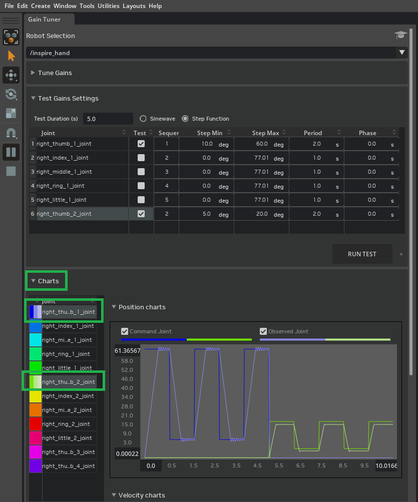
right_thumb_1_joint이 목표 주위에서 진동하고 right_thumb_2_joint가 목표에 도달하려고 애쓰는 것을 볼 수 있습니다.
추종성을 개선하기 위해
right_thumb_2_joint의 강성을 0.07로 높입니다.
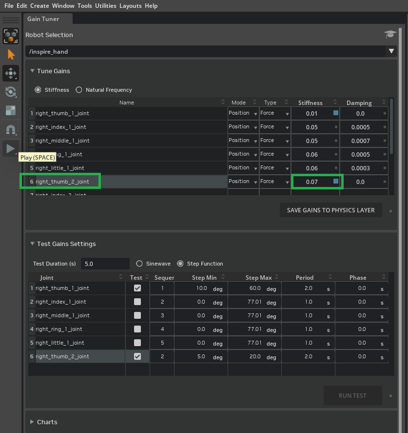
진동을 줄이기 위해 감쇠 0.0001을 추가합니다. 측면 움직임이 말리는 동작을 위한 공간을 만들도록 두 관절이 동시에 실행되도록(병렬 테스트)
right_thumb_1_joint과right_thumb_2_joint모두에 대해 Sequence를 1로 설정합니다. 범위 변경의 효과를 관찰하기 위해right_thumb_2_joint의 Step Min을 0.0으로, Step Max를 15로 설정합니다.
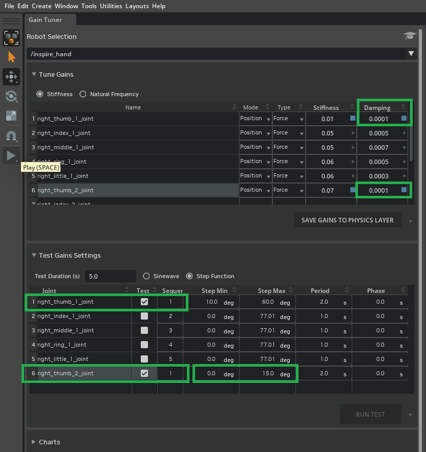
시뮬레이션이 아직 실행 중이지 않으면 Play를 누릅니다. Run Test를 클릭합니다.
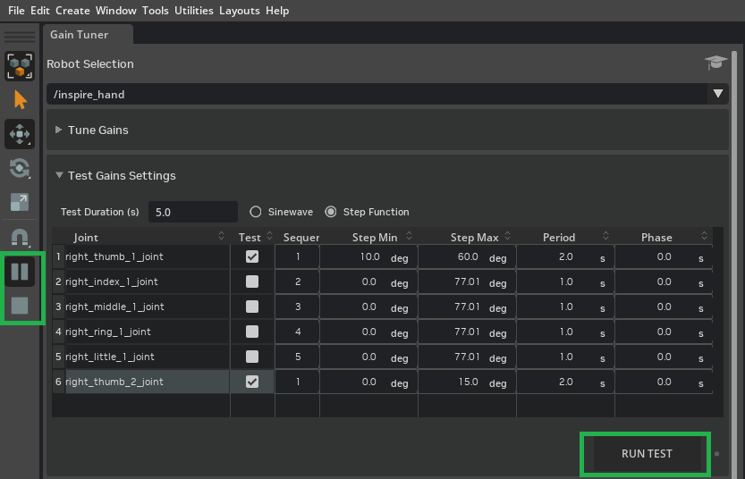
테스트가 완료되면 Charts 섹션을 확장하고
right_thumb_1_joint과right_thumb_2_joint를 다중 선택합니다(CTRL + 왼쪽 클릭).
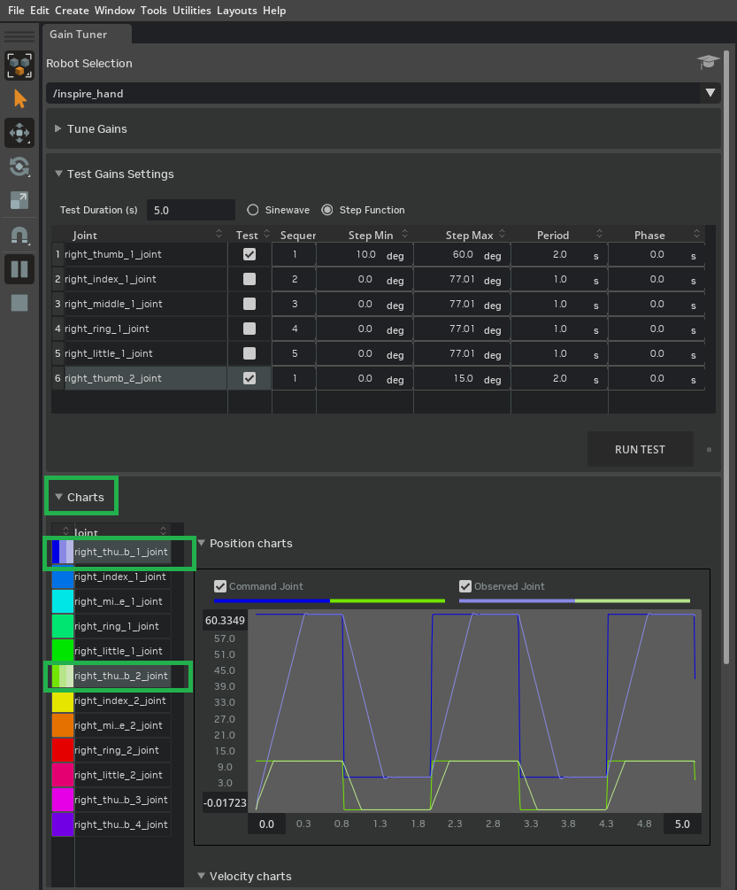
각 관절이 부드럽고 연속적인 동작 명령에 어떻게 반응하는지 평가하기 위해 Sinewave 테스트를 실행합니다.
right_thumb_1_joint에 대해 Amplitude 파라미터를 50으로,right_thumb_2_joint에 대해 30으로 설정한 후(효과를 관찰하기 위해 자유롭게 이 값들을 실험해 보세요) Run Test를 클릭합니다.
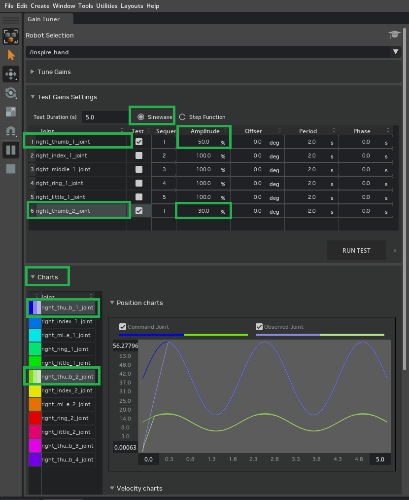
다양한 게인 값(강성 및 감쇠)과 다양한 테스트 파라미터를 실험하여 계속 튜닝합니다. 튜닝하는 동안, 관절 속도를 모니터링하여 이전에 정의된 최대 관절 속도 한계를 초과하지 않도록 합니다. 이를 위해:
Property 패널에서 임의의 관절을 선택합니다.
Extra Properties > Velocity로 스크롤하여 테스트가 실행되는 동안 현재 속도를 확인합니다.
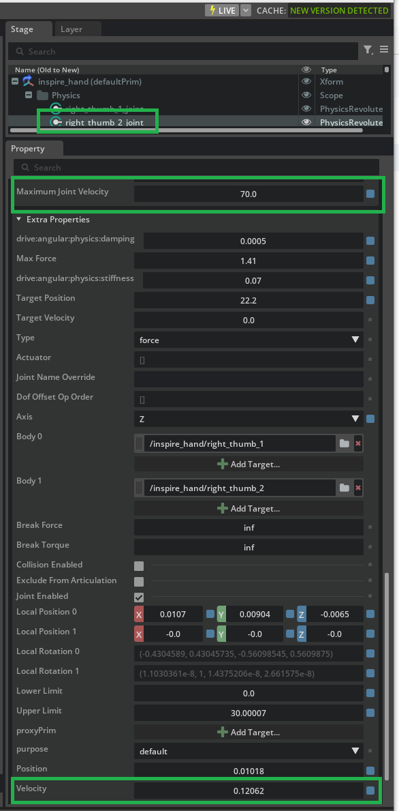
속도가 최댓값에 근접하거나 초과하면 게인 값을 줄이거나 테스트 파라미터를 조정합니다.
전체 핸드의 조율된 추종성을 평가하기 위해 병렬 스텝 함수 테스트를 실행합니다:
Gain Tuner의 모든 관절에 대해 Test를 활성화합니다.
각 관절에 대해 Sequence를 1로 설정합니다(이는 모든 손가락에 대한 테스트를 병렬로 실행합니다).
각 관절에 대해 Step Min과 Step Max를 각각 10과 30으로 설정합니다.
Run Test를 클릭합니다. 결과 차트는 현재 Stiffness와 Damping 설정이 전체 핸드가 동시 스텝 명령을 얼마나 잘 실행하는지 보여줍니다. 모든 관절에서 조율되고 안정적인 동작이 보여야 합니다. 예상 결과는 아래 예시와 유사할 수 있습니다:
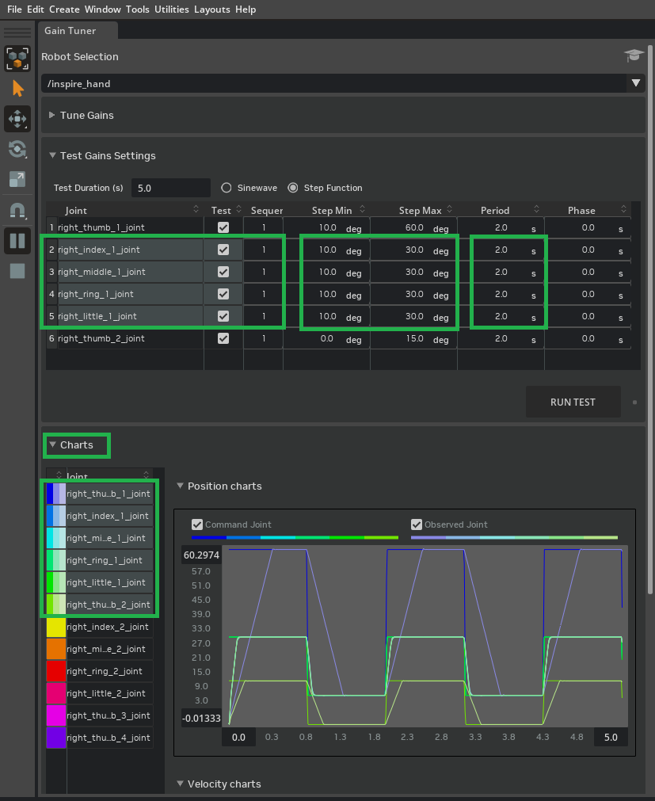
관절 |
테스트 |
시퀀서 |
Step Min |
Step Max |
주기 |
위상 |
|---|---|---|---|---|---|---|
right_thumb_1_joint |
1 |
1 |
10.0 deg |
60.0 deg |
2.0 s |
0.0 s |
right_index_1_joint |
1 |
1 |
10.0 deg |
30.0 deg |
2.0 s |
0.0 s |
right_middle_1_joint |
1 |
1 |
10.0 deg |
30.0 deg |
2.0 s |
0.0 s |
right_ring_1_joint |
1 |
1 |
10.0 deg |
30.0 deg |
2.0 s |
0.0 s |
right_little_1_joint |
1 |
1 |
10.0 deg |
30.0 deg |
2.0 s |
0.0 s |
right_thumb_2_joint |
1 |
1 |
0.0 deg |
10.0 deg |
2.0 s |
0.0 s |
Note
Gain Tuner에서 /path/to/Inspire/module_5_end-checkpoint_3/inspire_hand.usda를 열어 최종 조정된 강성 및 감쇠 값을 검토합니다.
Summary#
이 튜토리얼에서 다룬 내용:
Gain Tuner를 사용하여 엄지 관절의 강성 및 감쇠(Position, Force)를 튜닝하고 게인을 physics.usda 레이어에 저장하여 핸드가 안정적이고 임계 감쇠에 가까운 동작으로 위치 명령에 반응하도록 하기.
스텝 및 사인파 테스트를 실행하고 차트에서 감쇠 영역(과소 감쇠, 임계 감쇠, 과도 감쇠)을 해석하여 오버슈트나 느린 반응을 진단하기.
모든 관절에 대한 병렬 테스트 검증; 동일한 워크플로우가 다른 손가락이나 커스텀 핸드에도 적용됩니다. module_5_end-checkpoint_3 체크포인트에는 최종 조정된 값이 포함되어 있습니다.
Next Steps#
다음 단계와 추가 리소스를 보려면 Tutorial 7: Using the Dexterous Hand in Practice로 계속 진행하세요.
Further Learning#
파생 동작과 Gain Tuner 작동 방식에 대한 물리적 역학에 대한 자세한 내용은 Gain Tuner Extension을 읽으세요.